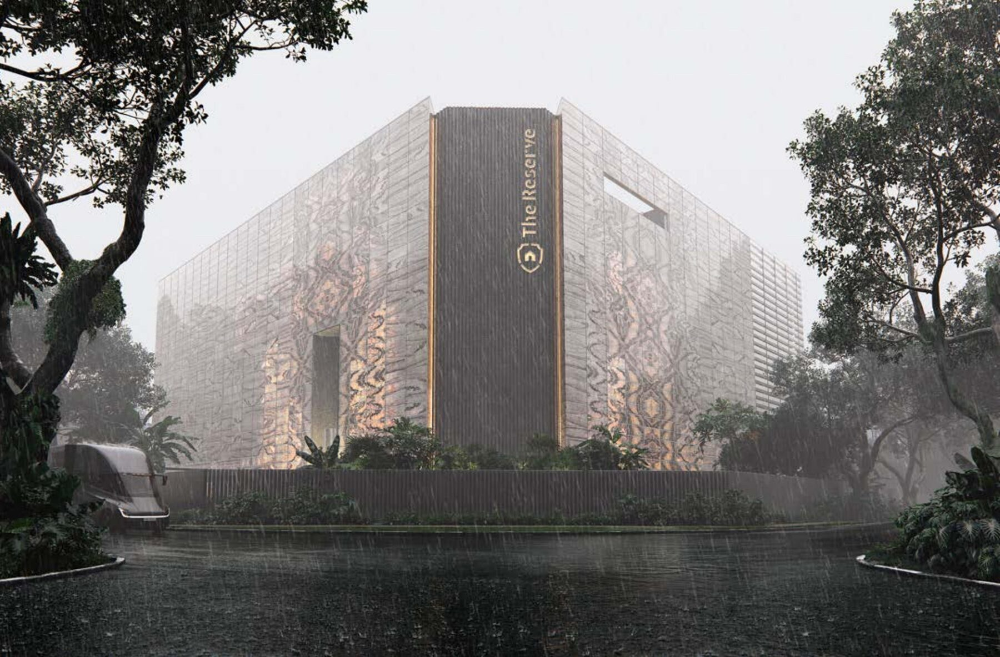
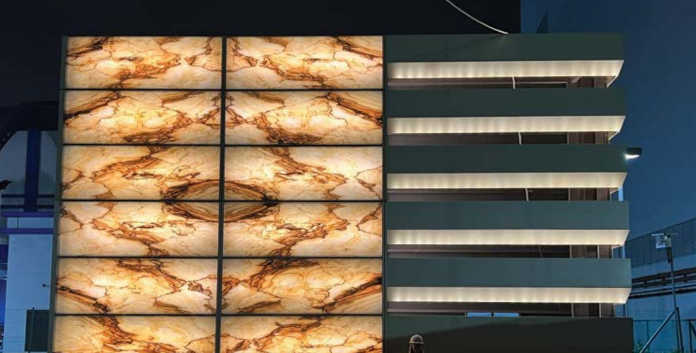
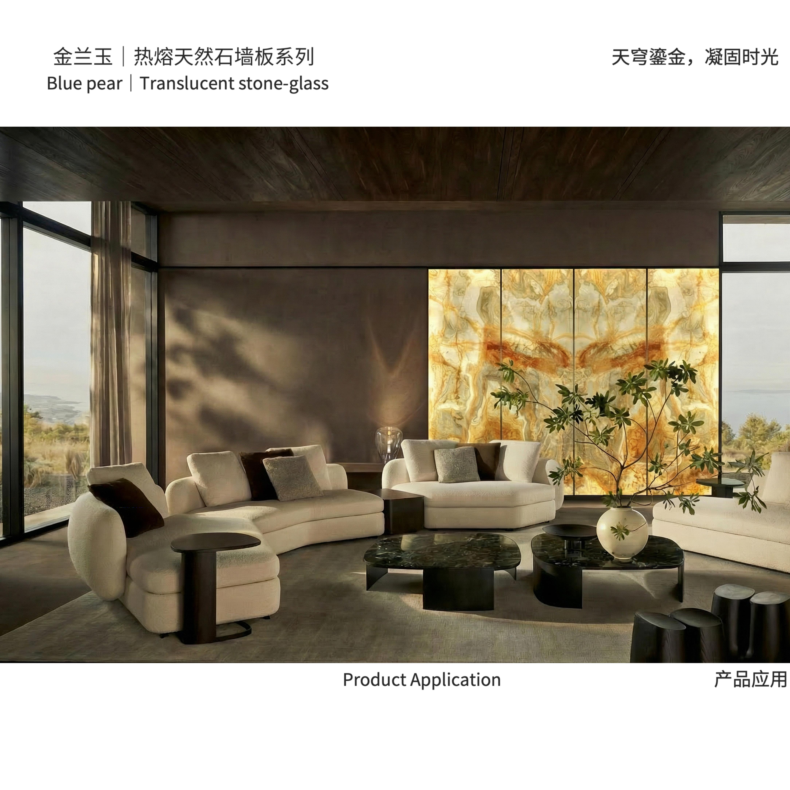
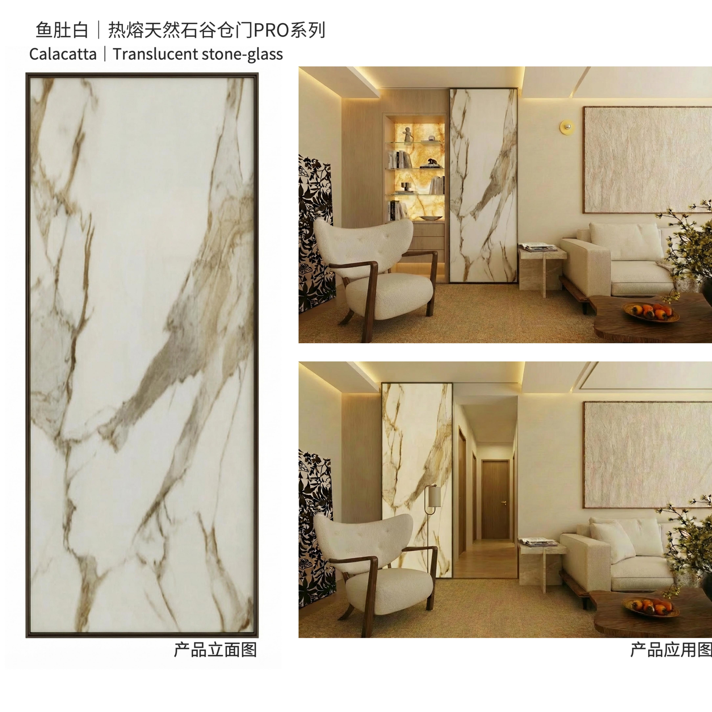
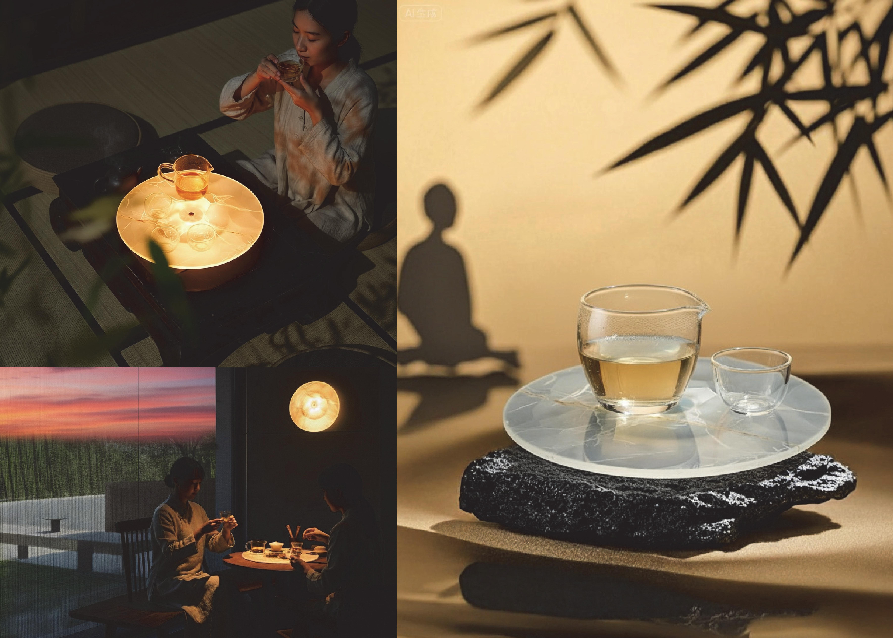
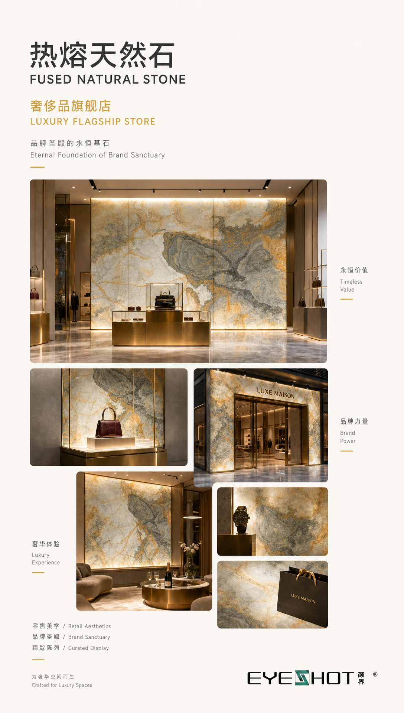
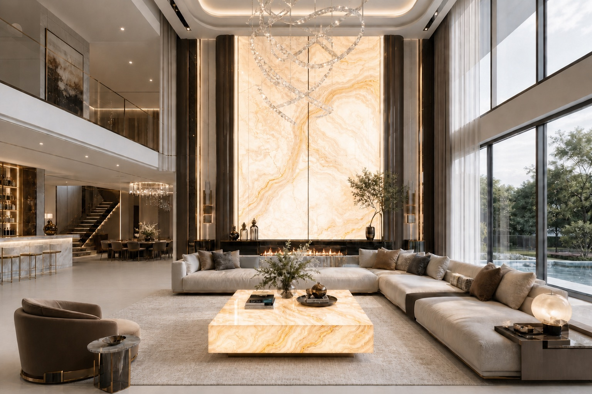
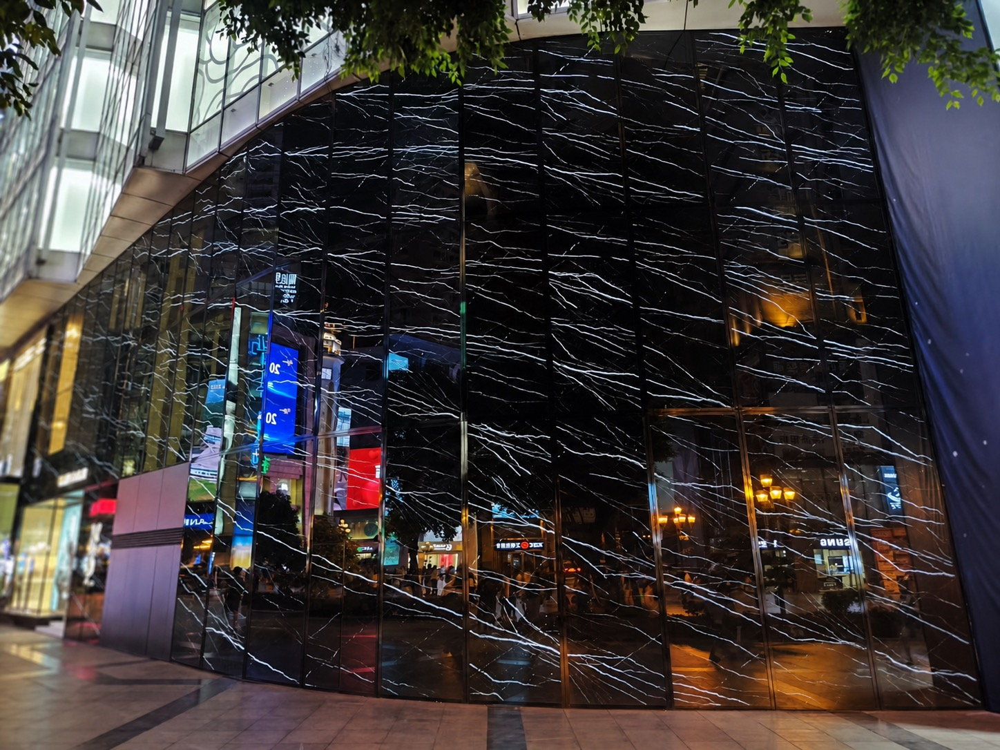

Fused translucent natural stone connecting building facades, interiors and landscape.
Instead of stacking second-level links, the homepage now connects material logic, product modules, application scenarios and built project evidence into one readable path.

3mm natural stone slices are fused with glass to keep authentic veining while gaining translucency, light weight, safety and outdoor application potential.
The homepage shows the key texture entry points. Full material reading stays on the material page.
Each product is a buildable module for drawings, details, samples and site coordination.

Walls, corners and trims keep one construction logic, texture scale and lighting language for interiors and reception spaces.

Barn Door Plus, pivot, hinged, sliding, folding and integrated applications turn translucent stone into door panels and spatial interfaces.

The Luminous Stone Art Tray carries authentic stone veining and light in a smaller collectible object for high-end display and gifting.
Facades, landscapes, public spaces and residences each ask for different evidence and delivery ability.
Key cases: The Reserve, Singapore and CR Land Yuanqi Guanchao. From distant identity to close-up texture, grid control and site delivery.

Feature walls, light and planting organize entries, garden boundaries and public pause points.

For lobbies, clubs, showrooms and brand environments where stone, lighting and circulation must work as one interface.

Wall panels, door panels and luminous backgrounds create a quieter, more refined residential expression.
The homepage highlights different project types so visitors can quickly judge facade, entry, landscape and high-end spatial applications.

Light, material and arrival sequence turn the facade into the first layer of spatial narrative.

Natural stone is used for high-end commercial facades with strong material identity and restraint.

A long feature wall links movement, pauses and light, giving the courtyard boundary a readable rhythm.
Send us your project stage, space type and intended application — we respond with samples, drawings and engineering advice.